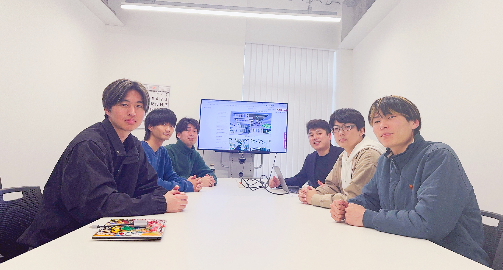

教員紹介

エルドンオチル
E Ridengaoqier
静岡理工科大学 理工学部 建築学科
| 専門分野 | 建築材料学・コンクリート工学・非破壊検査・AI応用 |
|---|---|
| 研究テーマ | ポーラスコンクリートの品質評価、深層学習による構造部材の劣化予測、非破壊試験法の開発 |
| 学位 | 博士（工学）（三重大学, 2019年9月） |
メンバー

2026年度 研究室メンバー

大畑 亮輔
4年生

小木曽 太一
4年生

宮田 恭輔
4年生

山河 拓馬
4年生

山田 匠海
4年生
学歴・職歴
学歴
- 2014年 7月中国内モンゴル工業大学 土木学院 土木工程専攻 卒業
- 2014年 10月三重大学大学院 工学研究科 建築学専攻 博士前期課程 入学
- 2016年 9月三重大学大学院 工学研究科 建築学専攻 博士前期課程 修了
- 2016年 10月三重大学大学院 工学研究科 システム工学専攻 博士後期課程 入学
- 2019年 9月三重大学大学院 工学研究科 システム工学専攻 博士後期課程 修了
職歴
- 2020年4月〜2025年3月東京理科大学 工学部 建築学科 嘱託助教
- 2025年4月〜静岡理工科大学 理工学部 建築学科 着任
受賞
- 2025Best Paper Presentation, 5th International Symposium on Concrete and Structures for the Next Generation (CSN2025)
- 2024The Best Presentation, the 10th Conference of the Asian Concrete Federation
- 2019三重大学学長賞（令和元年度博士後期課程修了時）
- 2019第41回コンクリート工学講演会 年次論文奨励賞
- 2017第39回コンクリート工学講演会 年次論文奨励賞
- 20162016年度日本建築学会大会（九州）学術講演会 材料施工部門若手優秀発表賞
- 2016三重大学学長賞（平成28年度博士前期課程修了時）
業績一覧
2025
- 根路銘 安史, 今本 啓一, 小田島 由梨, E Ridengaoqier, 清原 千鶴, 崎原 康平, 木野瀬 透, CHEN Junye, 高炉セメントC種を用いた島嶼国大宜味村役場旧庁舎のコンクリート調査, 日本建築学会技術報告集, Vol. 31, No.77, pp.36-39, 2025.2
- 細矢 仁, 今本 啓一, E Ridengaoqier, 清原 千鶴, 超薄肉プレキャストプレストレスト部材を用いた建築の空間有効化及び廃材削減事例, 日本建築学会技術報告集, Vol. 31, No.77, pp.444-448, 2025.2
- Ridengaoqier E, Kei-ichi Imamoto, Takafumi Noguchi, Ichizou Kishimoto, Kenji Kabayama, Predicting Deterioration of Reinforced Concrete Structural Members Using Deep Learning and Generative AI, CSN2025, 2025.3
2024
- Ridengaoqier E, Basic study on estimating porosity of pervious concrete using AI, 78th RILEM week & RILEM conference on smart materials and structures, 2024.8
- Ryosuke Nakajima, Kei-ichi Imamoto, Ridengaoqier E, Chizuru Kiyohara, Evaluating the durability of yakisugi -lamune onsen building as a research subject-, 78th RILEM week, 2024.8
- Tamako Abe, Kei-ichi Imamoto, Ridengaoqier E, Chizuru Kiyohara, Physical properties of pervious concrete with clinker-free cement, 78th RILEM week, 2024.8
- Sota Ogura, Kei-ichi Imamoto, Ridengaoqier E, Chizuru Kiyohara, Fundamental study on diagnosis of termite-induced timber by non/semi-destructive methods, 78th RILEM week, 2024.8
- 阿部珠子, 今本啓一, エルドンオチル, 田中章夫, 高炉スラグ微粉末を使用したクリンカーフリーポーラスコンクリートの基本物性に関する研究, コンクリート工学年次論文集, Vol.46, 2024.8
- 根路銘安史, 今本啓一, 多賀 紀晃, E Ridengaoqier, 清原千鶴, 飛来塩分環境下における内在塩分RC造建築物の劣化に及ぼす立地環境の影響, 日本建築学会技術報告集, Vol75, pp.604-607, 2024.6
2023
- Ridengaoqier E, Kei-ichi Imamoto, Experimental Study on Evaluation Accuracy of Pervious Concrete Dynamic Elastic Modulus Using Mobile Devices, The 14th Int. Conf. Modern Building Materials, Structures and Techniques, Vilnius, Lithuania, 2023.10
- Kei-ichi Imamoto, Endo T., Ridengaoqier E, Kiyohara C., Development of Thermal Storage Building Exterior Using Phase Change Materials, The 14th Int. Conf. Modern Building Materials, Vilnius, Lithuania, 2023.10
- Ridengaoqier E, S. Hatanaka, K. Imamoto, C. Kiyohara, T. Phoo-ngernkham, Experimental Study on Compressive and Flexural Strengths of High Strength Pervious Concrete Using Various Binding Materials, 9th World Congress on MCM, London, UK, 2023.8
- エルドンオチル, 栗田哲, ディープラーニングによるポーラスコンクリートの空隙率推定に関する基礎的研究, コンクリート工学年次論文集, Vol.45, No.1, pp.1150-1155, 2023.7
2021
- Ridengaoqier E, S. Hatanaka, P. Palamy, S. Kurita, Experimental study on the porosity evaluation of pervious concrete by using ultrasonic wave testing on surfaces, Construction and Building Materials, Vol. 300, 123959, 2021
- Ridengaoqier E, S. Hatanaka, Prediction of porosity of pervious concrete based on its dynamic elastic modulus, Results in Materials, Vol. 10, 100192, 2021
2019
- エルドンオチル, 曹偉, 畑中重光, 打音法によるポーラスコンクリートの空隙率推定, コンクリート工学年次論文集, Vol.51, pp.1439-1444, 2019.7
- 曹偉, エルドンオチル, 畑中重光, 接着媒質の影響を考慮した超音波法（表面法）によるポーラスコンクリートの空隙率推定, コンクリート工学年次論文集, Vol.41, No.1, pp.1433-1438, 2019.7
2018
- エルドンオチル, 三島直生, 畑中重光, ポーラスコンクリートの超音波伝播速度に及ぼす接触媒質の影響に関する実験的研究, コンクリート工学年次論文集, Vol.40, No.1, pp.1365-1370, 2018.8
- Ridengaoqier E, R. Fujiki, S. Hatanaka, Study on Quality Evaluation of Porous Concrete Using Void Ratio Estimated by Ultrasonic Wave Velocity, 43rd Conf. Our World in Concrete & Structures, Singapore, pp.371-380, 2018.8
- エルドンオチル, 三島直生, 畑中重光, 超音波法によるポーラスコンクリートの空隙率推定手法に関する研究, 日本建築学会構造系論文集, Vol.83, No.749, pp.943-951, 2018.7
2015〜2017
- エルドンオチル, 藤木諒将, 三島直生, 畑中重光, 現場施工されたポーラスコンクリートの品質管理に関する実験的研究, コンクリート工学年次論文集, Vol.39, No.1, pp.1489-1494, 2017.7
- エルドンオチル, 藤木諒将, 三島直生, 畑中重光, 超音波によるポーラスコンクリートの空隙率および曲げ強度の推定に関する実験的研究, コンクリート工学年次論文集, Vol.38, No.1, pp.1725-1730, 2016.7
- 藤木諒将, エルドンオチル, 三島直生, 畑中重光, ポーラスコンクリートの曲げ強度と圧縮強度の関係に及ぼす細骨材の影響に関する実験的研究, コンクリート工学年次論文集, Vol.38, No.1, pp.1719-1724, 2016.7
- エルドンオチル, 三島直生, 畑中重光, ポーラスコンクリートの圧縮強度と曲げ強度の関係に関する実験的研究, コンクリート工学年次論文集, Vol.37, No.1, pp.1345-1350, 2015.7
2024
- Ridengaoqier E, Experimental study on the relationship between dynamic elastic modulus and porosity of pervious concrete, The 10th ACF International Concrete Conference, 2024.8
- Ridengaoqier E, Quality Evaluation of Pervious Concrete Using AI, The 4th International Civil Engineering and Architecture Conference (CEAC 2024), Seoul, South Korea, 2024.3
2019
- E Ridengaoqier, S. Hatanaka, Hammering Test Evaluation of Dynamic Elastic Modulus and Void Ratio of Pervious Concrete, ICAES-19, Boston, USA, pp.60-66, 2019.5
2024
- 井田宥文, 今本啓一, 清原千鶴, エルドンオチル, 加熱を受けたコンクリートの物質移動抵抗性の変化と含浸材の影響, 第94回日本建築学会東海支部研究報告集, 2024.3
- 阿部珠子, 今本啓一, エルドンオチル, 清原千鶴, クリンカーフリーポーラスコンクリートの力学特性と透水性能に関する研究, 第94回日本建築学会東海支部研究報告集, 2024.3
- 井野黎來, 今本啓一, 木野瀬透, 江尻憲泰, エルドンオチル, 清原千鶴, 富岡製糸場内の鉄筋コンクリート造煙突の劣化調査, 第94回日本建築学会東海支部研究報告集, 2024.3
- 橋本聖矢, 今本啓一, エルドンオチル, 佐藤幸一, 清原千鶴, 飯澤尚哉, 小倉颯太, 3Dプリンターによる蟻害劣化を受けたCLTへの樹脂充填方法の検討, 第94回日本建築学会東海支部研究報告集, 2024.3
- 小倉颯太, 今本啓一, エルドンオチル, 清原千鶴, 佐藤幸一, 打撃音による蟻害を受けた木材および樹脂充填材の曲げ弾性係数推定, 第94回日本建築学会東海支部研究報告集, 2024.3
- 小田島由梨, 今本啓一, 清原千鶴, 崎原康平, 根路銘安史, 木野瀬透, チンジョンイ, エルドンオチル, 大宜味村役場旧庁舎の周辺環境及びコンクリート調査, 第94回日本建築学会東海支部研究報告集, 2024.3
- 石綿凜, 今本啓一, 根路銘安史, エルドンオチル, 清原千鶴, 内在塩分を有するちとせ商店街ビルの損傷調査, 第94回日本建築学会東海支部研究報告集, 2024.3
- 中嶋亮介, 今本啓一, エルドンオチル, 清原千鶴, ラムネ温泉における焼杉の劣化調査, 第94回日本建築学会東海支部研究報告集, 2024.3
- 飯澤尚哉, 今本啓一, 清原千鶴, エルドンオチル, 大西郷, 那須秀行, 仮設資材としての敷鉄板の利用を意図したCLTの適用性に関する研究, 第94回日本建築学会東海支部研究報告集, 2024.3
- 尾崎勇太, 今本啓一, エルドンオチル, 清原千鶴, 田中章夫, 澁井雄斗, 端島共通験を踏まえた腐食促進試験方法の提案, 第94回日本建築学会東海支部研究報告集, 2024.3
2023
- エルドンオチル, 栗田哲, 金澤健司, Colabによる打音法を用いたポーラスコンクリートの動弾性係数の測定に関する基礎的研究, 2023年度日本建築学会大会学術講演梗概集, 2023.9
- 小倉颯太, 今本啓一, エルドンオチル, 清原千鶴 他, 非/微破壊手法を用いた蟻害を受けた木材の劣化診断法に関する基礎的研究, 2023年度日本建築学会大会学術講演梗概集, 2023.9
- 清原千鶴, 今本啓一, エルドンオチル, パラフィン系相変化材料を含有する建材の温度上昇抑制効果に関する基礎的研究, 2023年度日本建築学会大会学術講演梗概集, 2023.9
- 羽田浩二, 栗田哲 他, エルドンオチル, 常時微動観測に基づく高知県中土佐町旧消防署庁舎の振動性状の把握, 2023年度日本建築学会大会学術講演梗概集, 2023.9
- 栗田哲, エルドンオチル, 起振機実験と微動測定に基づく小振幅時のスマートフォンの振動測定精度の検証, 2023年度日本建築学会大会学術講演梗概集, 2023.9
2020〜2022
- エルドンオチル, 栗田哲, AIによる透水性コンクリートの空隙率推定方法の提案, 2022年度日本建築学会大会学術講演梗概集, 2022.9
- エルドンオチル, 畑中重光, 動弾性特性に基づく透水性コンクリートの空隙率推定に関する研究, 第7回コンクリート構造物の非破壊検査シンポジウム, 2022.8
- 竹本彬人, 栗田哲, Ridengaoqier E, SRC造11階建物の床スラブの上下振動特性（起振機実験）, 2021年度日本建築学会大会学術講演梗概集, 2021.9
- Ridengaoqier E, 栗田哲, 竹本彬人, SRC造11階建物の床スラブの上下振動特性（FEM解析と起振機実験の比較）, 2021年度日本建築学会大会学術講演梗概集, 2021.9
- エルドンオチル, 畑中重光, ポーラスコンクリートの動弾性係数−空隙率関係に及ぼす骨材粒径および空隙径の影響, 2020年度日本建築学会大会学術講演梗概集, pp.489-490, 2020.9
2015〜2019
- エルドンオチル, 曹偉, 畑中重光, FFT分析による卓越周波数を用いたポーラスコンクリートの空隙率推定に関する研究, 日本建築学会大会学術講演梗概集, pp.137-138, 2018.9
- エルドンオチル, 三島直生, 畑中重光, ポーラスコンクリートの超音波伝播速度測定へのシリコーンシートの適用性に関する基本的研究, 日本建築学会大会学術講演梗概集, pp.77-78, 2017.9
- エルドンオチル, 三島直生, 畑中重光, ポーラスコンクリートの超音波伝播速度測定に対するシリコーンシートの適用性について基本的研究, 日本建築学会大会学術講演梗概集, pp.635-636, 2016.9
- 三島直生, エルドンオチル, 畑中重光 他, 現場施工されたポーラスコンクリートスラブの品質評価に関する実験的研究（その1）, 日本建築学会学術講演梗概集, pp555-556, 2015.9
- エルドンオチル, 三島直生, 畑中重光 他, 現場施工されたポーラスコンクリートスラブの品質評価に関する実験的研究（その2）, 日本建築学会学術講演梗概集, pp557-558, 2015.9
所属学会
日本建築学会
日本コンクリート工学会
日本土木学会
Asian Concrete Federation
学協会活動
- 日本建築学会東海支部 材料施工委員会委員（2025年7月〜）
- 日本コンクリート工学会 文献調査委員会委員（2025年4月〜）
- Asian Concrete Federation, Technical Committee - Pervious Concrete, Member（2023年4月〜）
- 一般社団法人日本透水性コンクリート協会 学術委員会委員（2020年5月〜）
メディア・取材記事
-
取材
エルドンオチル先生インタビュー記事研究内容や研究室の紹介についてのインタビュー記事（note）
-
取材
研究室の学生インタビュー記事研究室に所属する学生へのインタビュー記事（note）